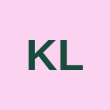
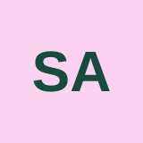
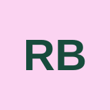

Milli Haverinen
[Role or focus in the project]
[Write two or three sentences: what Milli worked on in this project and what she is interested in.]
Service design process
We looked at the PinkLazerCat web shop and asked a simple question: what would make it easier to use? This portfolio follows the work from research to idea, prototype and business model.
The team
Short introductions from each of us.
[Role or focus in the project]
[Write two or three sentences: what Milli worked on in this project and what she is interested in.]

[Role or focus in the project]
[Write two or three sentences: what Kati worked on in this project and what she is interested in.]

[Role or focus in the project]
[Write two or three sentences: what Sophie worked on in this project and what she is interested in.]

[Role or focus in the project]
[Write two or three sentences: what Rasmus worked on in this project and what he is interested in.]
The process
Service context, benchmarking, users, findings, persona and design question.
DevelopTwelve ideas for improvement, and the one we chose.
Develop & DeliverWhat we made, what we learned, and what comes next.
DeliverWho benefits, what value they get, and what it takes to deliver.
Final portfolio
[List the sources for your research, benchmarks and any visuals you did not create. For example: the PinkLazerCat web shop, the Lindex website, and where the screenshots came from.]
[Say where and how you used AI. For example: this portfolio website was built with the help of Claude (Anthropic). Add anything else, such as translation or drafting help.]